Contents
ASEN 3111 - Computational Assignment 02 - Main
Flow Over Thin Airfoils
Author: Margaux McFarland Collaborators: Date: 10/10/19
clc clear all close all %givens c = 2; %m alpha = deg2rad(12); %radians V_inf = 68; % m/s p_inf = 101.3e3; %Pa rho_inf = 1.225; %kg/m^3 N = 20; %plot airfoil flow - with lowish number of vortices Plot_Airfoil_Flow(c, alpha, V_inf, p_inf, rho_inf, N); %vary number of N vorticies %try very high number to approximate the actual results N_high = 1000; Plot_Airfoil_Flow(c, alpha, V_inf, p_inf, rho_inf, N_high);
min pressure with 20 vorticies: 62817.684100 Pa max velocity with 20 vorticies: 259.715750 m/s ******************************************** min pressure with 1000 vorticies: 78559.629783 Pa max velocity with 1000 vorticies: 204.330945 m/s ********************************************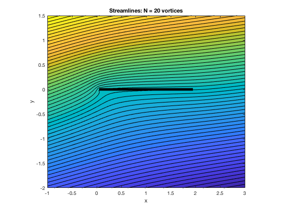 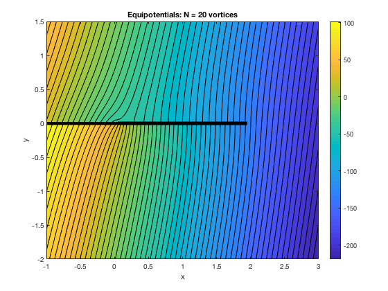 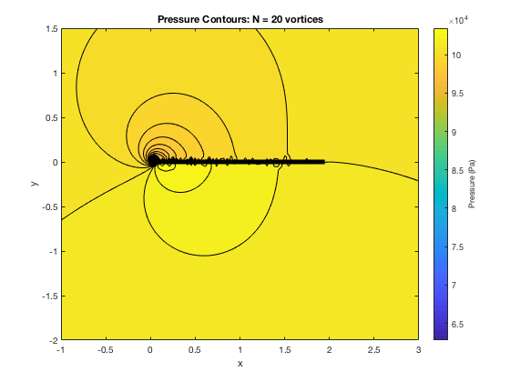 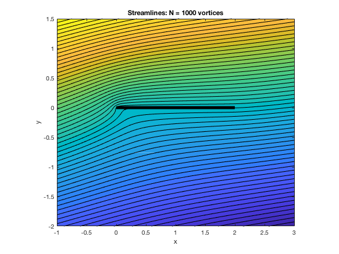 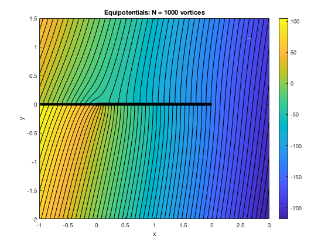 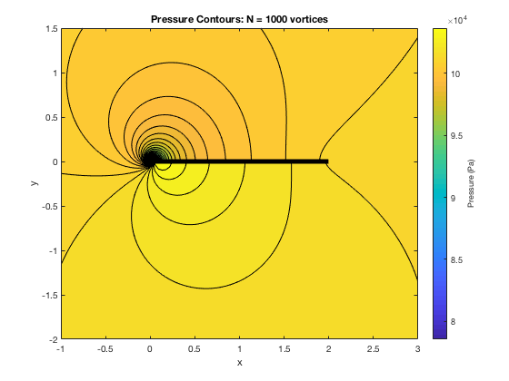
make error plots
%vector of varying number of vortices vort_vec = 0:10:300; for i = 1:length(vort_vec) [error_V(i),error_P(i)] = calcError(c, alpha, V_inf, p_inf, rho_inf, vort_vec(i)); end %find 5% percent error on plots index_V = find(error_V <= 0.05,1); index_P = find(error_P <= 0.05, 1); fprintf('The number of vortices requires to get <=5 percent error in Velocity: %f\n', vort_vec(index_V)); fprintf('The number of vortices requires to get <=5 percent error in Pressure: %f\n', vort_vec(index_P)); fprintf('********************************************\n'); figure plot(vort_vec, error_V); hold on yline(0.05, 'r--'); xlabel('Number of Vortices'); ylabel('Error'); title('Error in Velocity vs Number of vorticies'); legend('error curve','5 percent error line'); figure plot(vort_vec, error_P); hold on yline(0.05, 'r--'); xlabel('Number of Vortices'); ylabel('Error'); title('Error in Pressure vs Number of vorticies'); legend('error curve','5 percent error line');
The number of vortices requires to get <=5 percent error in Velocity: 50.000000 The number of vortices requires to get <=5 percent error in Pressure: 0.000000 ********************************************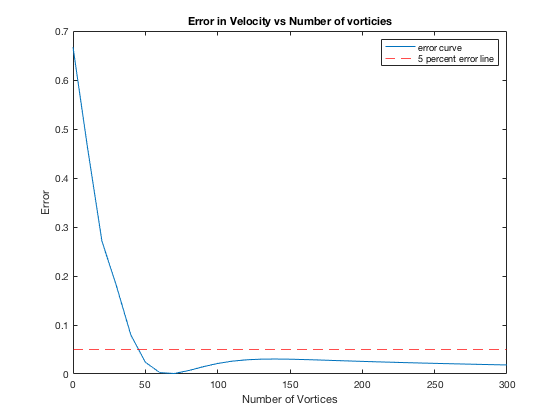 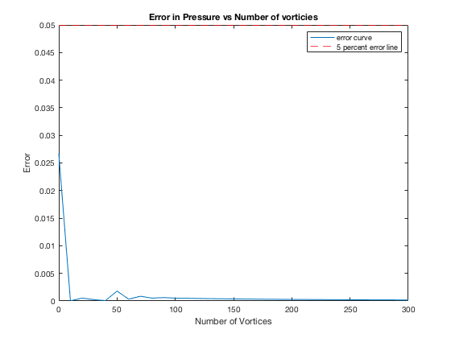
study changes in 1) chord length 2) angle of attack 3) freestream flow speed
%vectors of varying values chords = linspace(1,10,5); alphas = linspace(0, pi/2, 5); speeds = linspace(1,100,5); N = 50; % determined to be accurate enough from above %plot these variations Plot_Airfoil_Flow_variations(chords, alphas, speeds, p_inf, rho_inf, N);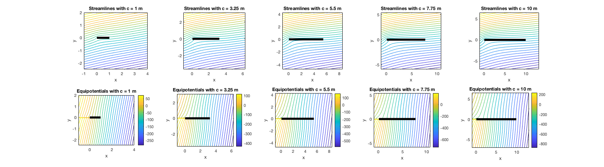
 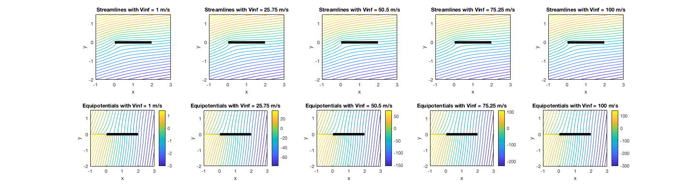
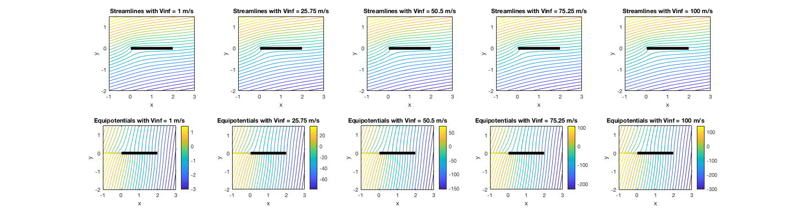 Functions Called
The following functions were built and called as apart of this assignment.
function Plot_Airfoil_Flow(c,alpha,V_inf,p_inf,rho_inf,N) %Plot_Airfoil_Flow plot the flow over an airfoil % This function plots the streamlines, equipotential lines, and pressure % contours for flow about a thin airfoil using approximation. % % Author: Margaux McFarland % Collaborators: % Date: 10/10/19 %% Define Domain xmin=-1; xmax=3; ymin=-2; ymax=1.5; % Define Number of Grid Points nx=100; % steps in the x direction ny=100; % steps in the y direction % Create mesh over domain using number of grid points specified [x,y]=meshgrid(linspace(xmin,xmax,nx),linspace(ymin,ymax,ny)); %% Streamlines %sum up discretized strenghts dx = c/N; x_c = dx/2:dx:c-dx/2; %strength Gamma = 2.*alpha.*V_inf.*sqrt((1-(x_c./c))./(x_c./c)).*dx; xGamma = x_c; % location of vortex yGamma = 0; % Define a function which calculates the radius. % Center of circle = (x1,y1) radius= @(x,y,x1,y1) sqrt((x-x1).^2+(y-y1).^2); % Calculate psi for uniform stream (Eq. 3.55; pg. 310) Psi_U0 = (V_inf.*y.*cos(alpha) - V_inf.*x.*sin(alpha)); % Calculate psi for vortex (Eq. 3.114; pg. 310) Psi_Gamma = 0; % sum up each stream function (superposition) for i = 1:length(x_c) Psi_Gamma = Psi_Gamma + Gamma(i)/(2*pi)*log(radius(x,y,xGamma(i),yGamma)); end % Add all streamfunctions together StreamFunction = Psi_U0 + Psi_Gamma; %Psi_U0 % Determine color levels for contours levmin = StreamFunction(1,nx); % defines the color levels -> trial and error to find a good representation levmax = StreamFunction(ny,nx/2); levels = linspace(levmin,levmax,50)'; % Plot streamfunction at levels figure contourf(x,y,StreamFunction, 60); hold on plot(xGamma,zeros(1,N),'LineWidth', 5, 'Color', 'k'); % Adjust axis and label figure axis equal axis([xmin xmax ymin ymax]) ylabel('y') xlabel('x') title("Streamlines: N = " + N + " vortices"); %% Equipotentials %potential for uniform flow Phi_U = (V_inf.*y.*sin(alpha) - V_inf.*x.*cos(alpha)); %potential for vortices Phi_Gamma = 0; % sum up each stream function (superposition) for i = 1:length(x_c) theta = atan2(y,x-x_c(i)); Phi_Gamma = Phi_Gamma + -Gamma(i)/(2*pi)*theta; end %add potential together Equipotentials = Phi_U + Phi_Gamma; % Plot equipotentials figure contourf(x,y,Equipotentials, 60); colorbar hold on plot(xGamma,zeros(1,N),'LineWidth', 5, 'Color', 'k'); % Adjust axis and label figure axis equal axis([xmin xmax ymin ymax]) ylabel('y') xlabel('x') title("Equipotentials: N = " + N + " vortices"); %% Pressure Contours %get components of velocity - uniform u_U = V_inf*cos(alpha); v_U = V_inf*sin(alpha); %get components of velocity - vortex V_r_Gamma = 0; V_theta_Gamma_x = 0; V_theta_Gamma_y = 0; for i = 1:length(x_c) theta = atan2(y,x-x_c(i)); V_theta_Gamma_x = V_theta_Gamma_x + (Gamma(i)./(2.*pi.*radius(x,y,xGamma(i),yGamma)).*sin(theta)); V_theta_Gamma_y = V_theta_Gamma_y + (-Gamma(i)./(2.*pi.*radius(x,y,xGamma(i),yGamma)).*cos(theta)); end %add components and get magnitude V = sqrt((u_U + V_r_Gamma+ V_theta_Gamma_x).^2 + (v_U + V_theta_Gamma_y).^2); %pressure coefficient cp = 1 - (V./V_inf).^2; %dynamic pressure q_inf = (1/2)*rho_inf*V_inf^2; P = cp.*q_inf + p_inf; % Plot pressure contours figure contourf(x,y,P, 60); col = colorbar; col.Label.String = 'Pressure (Pa)'; hold on plot(xGamma,zeros(1,N),'LineWidth', 5, 'Color', 'k'); % Adjust axis and label figure axis equal axis([xmin xmax ymin ymax]) ylabel('y') xlabel('x') title("Pressure Contours: N = " + N + " vortices"); fprintf("min pressure with %d vorticies: %f Pa\n",N,min(min(P))); fprintf("max velocity with %d vorticies: %f m/s\n",N,max(max(V))); fprintf('********************************************\n'); end
function [error_V, error_P] = calcError(c,alpha,V_inf,p_inf,rho_inf,N) %calcError calculates the error of Pressure and Velocity with a given N % This function takes in a number of vortices (N vector) and calculates the max velocity % and max pressure of the flow and compares it to the actual value which % is estimated using a large number of voritices. The function then % returns that error % % Author: Margaux McFarland % Collaborators: % Date: 10/10/19 %% get estimates values % Define Domain xmin=-1; xmax=3; ymin=-2; ymax=1.5; % Define Number of Grid Points nx=100; % steps in the x direction ny=100; % steps in the y direction % Create mesh over domain using number of grid points specified [x,y]=meshgrid(linspace(xmin,xmax,nx),linspace(ymin,ymax,ny)); %sum up discretized strenghts dx = c/N; x_c = dx/2:dx:c-dx/2; %strength Gamma = 2.*alpha.*V_inf.*sqrt((1-(x_c./c))./(x_c./c)).*dx; xGamma = x_c; % location of vortex yGamma = 0; % Define a function which calculates the radius. % Center of circle = (x1,y1) radius= @(x,y,x1,y1) sqrt((x-x1).^2+(y-y1).^2); % Calculate psi for uniform stream (Eq. 3.55; pg. 310) Psi_U0 = (V_inf.*y.*cos(alpha) - V_inf.*x.*sin(alpha)); %get components of velocity - uniform u_U = V_inf*cos(alpha); v_U = V_inf*sin(alpha); %get components of velocity - vortex V_r_Gamma = 0; V_theta_Gamma_x = 0; V_theta_Gamma_y = 0; for i = 1:length(x_c) theta = atan2(y,x-x_c(i)); V_theta_Gamma_x = V_theta_Gamma_x + (Gamma(i)./(2.*pi.*radius(x,y,xGamma(i),yGamma)).*sin(theta)); V_theta_Gamma_y = V_theta_Gamma_y + (-Gamma(i)./(2.*pi.*radius(x,y,xGamma(i),yGamma)).*cos(theta)); end %add components and get magnitude V = sqrt((u_U + V_r_Gamma+ V_theta_Gamma_x).^2 + (v_U + V_theta_Gamma_y).^2); %get V max V_max = max(max(V)); %pressure coefficient cp = 1 - (V./V_inf).^2; %dynamic pressure q_inf = (1/2)*rho_inf*V_inf^2; P = cp.*q_inf + p_inf; %get max P P_max = max(max(P)); %% get actual values N_high = 1000; %sum up discretized strenghts dx = c/N_high; x_c = dx/2:dx:c-dx/2; %strength Gamma = 2.*alpha.*V_inf.*sqrt((1-(x_c./c))./(x_c./c)).*dx; xGamma = x_c; % location of vortex yGamma = 0; % Define a function which calculates the radius. % Center of circle = (x1,y1) radius= @(x,y,x1,y1) sqrt((x-x1).^2+(y-y1).^2); % Calculate psi for uniform stream (Eq. 3.55; pg. 310) Psi_U0 = (V_inf.*y.*cos(alpha) - V_inf.*x.*sin(alpha)); %get components of velocity - uniform u_U = V_inf*cos(alpha); v_U = V_inf*sin(alpha); %get components of velocity - vortex V_r_Gamma = 0; V_theta_Gamma_x = 0; V_theta_Gamma_y = 0; for i = 1:length(x_c) theta = atan2(y,x-x_c(i)); V_theta_Gamma_x = V_theta_Gamma_x + (Gamma(i)./(2.*pi.*radius(x,y,xGamma(i),yGamma)).*sin(theta)); V_theta_Gamma_y = V_theta_Gamma_y + (-Gamma(i)./(2.*pi.*radius(x,y,xGamma(i),yGamma)).*cos(theta)); end %add components and get magnitude V = sqrt((u_U + V_r_Gamma+ V_theta_Gamma_x).^2 + (v_U + V_theta_Gamma_y).^2); %get V max V_max_actual = max(max(V)); %pressure coefficient cp = 1 - (V./V_inf).^2; %dynamic pressure q_inf = (1/2)*rho_inf*V_inf^2; P = cp.*q_inf + p_inf; %get max P P_max_actual = max(max(P)); %% calculate error error_V = abs(V_max - V_max_actual)/V_max_actual; error_P = abs(P_max - P_max_actual)/P_max_actual; end
function Plot_Airfoil_Flow_variations(c,alpha,V_inf,p_inf,rho_inf,N) %Plot_Airfoil_Flow_variations plot the flow over an airfoil with changing %values % This function plots the streamlines, equipotential lines, and pressure % contours for flow about a thin airfoil using approximation. Takes in % vectors of varying chord length, angle of attack, and freesteam % velocities % % Author: Margaux McFarland % Collaborators: % Date: 10/10/19 %loop through each variation (5 different values for each) %keep track of how many plots for placing in subplot %there will be three plots (for each varying variable) each with 15 (5 stream % functions, 5 equipotentials, and 5 pressure contours) plots inside plot_num = 1; %format plots to see everything x0=10; y0=10; width=1500; height=400; % original givens c_orig = 2; %m alpha_orig = deg2rad(12); %radians V_inf_orig = 68; % m/s %% loop through changes in chord length figure % all on same figure set(gcf,'position',[x0,y0,width,height]); for i = 1:length(c) % Define Domain xmin=-1; xmax=3 + c(i); ymin=-2 - c(i)/2; ymax=1.5 + c(i)/2; % Define Number of Grid Points nx=100; % steps in the x direction ny=100; % steps in the y direction % Create mesh over domain using number of grid points specified [x,y]=meshgrid(linspace(xmin,xmax,nx),linspace(ymin,ymax,ny)); plot_num = i; %% Streamlines %sum up discretized strenghts dx = c(i)/N; x_c = dx/2:dx:c(i)-dx/2; %strength Gamma = 2.*alpha_orig.*V_inf_orig.*sqrt((1-(x_c./c(i)))./(x_c./c(i))).*dx; xGamma = x_c; % location of vortex yGamma = 0; % Define a function which calculates the radius. % Center of circle = (x1,y1) radius= @(x,y,x1,y1) sqrt((x-x1).^2+(y-y1).^2); % Calculate psi for uniform stream (Eq. 3.55; pg. 310) Psi_U0 = (V_inf_orig.*y.*cos(alpha_orig) - V_inf_orig.*x.*sin(alpha_orig)); % Calculate psi for vortex (Eq. 3.114; pg. 310) Psi_Gamma = 0; % sum up each stream function (superposition) for j = 1:length(x_c) Psi_Gamma = Psi_Gamma + Gamma(j)/(2*pi)*log(radius(x,y,xGamma(j),yGamma)); end % Add all streamfunctions together StreamFunction = Psi_U0 + Psi_Gamma; %Psi_U0 % Plot streamfunction at levels subplot(2,5,plot_num); plot_num = plot_num + 5; %plot equipotentials on row below contour(x,y,StreamFunction, 30); hold on plot(xGamma,zeros(1,N),'LineWidth', 5, 'Color', 'k'); % Adjust axis and label figure axis equal axis([xmin xmax ymin ymax]) ylabel('y') xlabel('x') title("Streamlines with c = " + c(i) + " m"); %% Equipotentials %potential for uniform flow Phi_U = (V_inf_orig.*y.*sin(alpha_orig) - V_inf_orig.*x.*cos(alpha_orig)); %potential for vortices Phi_Gamma = 0; % sum up each stream function (superposition) for j = 1:length(x_c) theta = atan2(y,x-x_c(j)); Phi_Gamma = Phi_Gamma + -Gamma(j)/(2*pi)*theta; end %add potential together Equipotentials = Phi_U + Phi_Gamma; % Plot equipotentials subplot(2,5,plot_num); contour(x,y,Equipotentials, 30); colorbar hold on plot(xGamma,zeros(1,N),'LineWidth', 5, 'Color', 'k'); % Adjust axis and label figure axis equal axis([xmin xmax ymin ymax]) ylabel('y') xlabel('x') title("Equipotentials with c = " + c(i) + " m"); end %% loop through changes in angle of attack figure % all on same figure set(gcf,'position',[x0,y0,width,height]); for i = 1:length(alpha) % Define Domain xmin=-1; xmax=3; ymin=-2; ymax=1.5; % Define Number of Grid Points nx=100; % steps in the x direction ny=100; % steps in the y direction % Create mesh over domain using number of grid points specified [x,y]=meshgrid(linspace(xmin,xmax,nx),linspace(ymin,ymax,ny)); plot_num = i; %sum up discretized strenghts dx = c_orig/N; x_c = dx/2:dx:c_orig-dx/2; %strength Gamma = 2.*alpha(i).*V_inf_orig.*sqrt((1-(x_c./c_orig))./(x_c./c_orig)).*dx; xGamma = x_c; % location of vortex yGamma = 0; % Define a function which calculates the radius. % Center of circle = (x1,y1) radius= @(x,y,x1,y1) sqrt((x-x1).^2+(y-y1).^2); % Calculate psi for uniform stream (Eq. 3.55; pg. 310) Psi_U0 = (V_inf_orig.*y.*cos(alpha(i)) - V_inf_orig.*x.*sin(alpha(i))); % Calculate psi for vortex (Eq. 3.114; pg. 310) Psi_Gamma = 0; % sum up each stream function (superposition) for j = 1:length(x_c) Psi_Gamma = Psi_Gamma + Gamma(j)/(2*pi)*log(radius(x,y,xGamma(j),yGamma)); end % Add all streamfunctions together StreamFunction = Psi_U0 + Psi_Gamma; %Psi_U0 % Plot streamfunction at levels subplot(2,5,plot_num); plot_num = plot_num + 5; %plot equipotentials on row below contour(x,y,StreamFunction, 30); hold on plot(xGamma,zeros(1,N),'LineWidth', 5, 'Color', 'k'); % Adjust axis and label figure axis equal axis([xmin xmax ymin ymax]) ylabel('y') xlabel('x') title("Streamlines with alpha = " + alpha(i) + " radians"); %% Equipotentials %potential for uniform flow Phi_U = (V_inf_orig.*y.*sin(alpha(i)) - V_inf_orig.*x.*cos(alpha(i))); %potential for vortices Phi_Gamma = 0; % sum up each stream function (superposition) for j = 1:length(x_c) theta = atan2(y,x-x_c(j)); Phi_Gamma = Phi_Gamma + -Gamma(j)/(2*pi)*theta; end %add potential together Equipotentials = Phi_U + Phi_Gamma; % Plot equipotentials subplot(2,5,plot_num); contour(x,y,Equipotentials, 30); colorbar hold on plot(xGamma,zeros(1,N),'LineWidth', 5, 'Color', 'k'); % Adjust axis and label figure axis equal axis([xmin xmax ymin ymax]) ylabel('y') xlabel('x') title("Equipotentials with alpha = " + alpha(i) + " radians"); end %% loop through changes in V_inf figure % all on same figure set(gcf,'position',[x0,y0,width,height]) for i = 1:length(V_inf) plot_num = i; %sum up discretized strenghts dx = c_orig/N; x_c = dx/2:dx:c_orig-dx/2; %strength Gamma = 2.*alpha_orig.*V_inf(i).*sqrt((1-(x_c./c_orig))./(x_c./c_orig)).*dx; xGamma = x_c; % location of vortex yGamma = 0; % Define a function which calculates the radius. % Center of circle = (x1,y1) radius= @(x,y,x1,y1) sqrt((x-x1).^2+(y-y1).^2); % Calculate psi for uniform stream (Eq. 3.55; pg. 310) Psi_U0 = (V_inf(i).*y.*cos(alpha_orig) - V_inf(i).*x.*sin(alpha_orig)); % Calculate psi for vortex (Eq. 3.114; pg. 310) Psi_Gamma = 0; % sum up each stream function (superposition) for j = 1:length(x_c) Psi_Gamma = Psi_Gamma + Gamma(j)/(2*pi)*log(radius(x,y,xGamma(j),yGamma)); end % Add all streamfunctions together StreamFunction = Psi_U0 + Psi_Gamma; %Psi_U0 % Plot streamfunction at levels subplot(2,5,plot_num); plot_num = plot_num + 5; %plot equipotentials on row below contour(x,y,StreamFunction, 30); hold on plot(xGamma,zeros(1,N),'LineWidth', 5, 'Color', 'k'); % Adjust axis and label figure axis equal axis([xmin xmax ymin ymax]) ylabel('y') xlabel('x') title("Streamlines with Vinf = " + V_inf(i) + " m/s"); %% Equipotentials %potential for uniform flow Phi_U = (V_inf(i).*y.*sin(alpha_orig) - V_inf(i).*x.*cos(alpha_orig)); %potential for vortices Phi_Gamma = 0; % sum up each stream function (superposition) for j = 1:length(x_c) theta = atan2(y,x-x_c(j)); Phi_Gamma = Phi_Gamma + -Gamma(j)/(2*pi)*theta; end %add potential together Equipotentials = Phi_U + Phi_Gamma; % Plot equipotentials subplot(2,5,plot_num); contour(x,y,Equipotentials, 30); colorbar hold on plot(xGamma,zeros(1,N),'LineWidth', 5, 'Color', 'k'); % Adjust axis and label figure axis equal axis([xmin xmax ymin ymax]) ylabel('y') xlabel('x') title("Equipotentials with Vinf = " + V_inf(i) + " m/s"); end